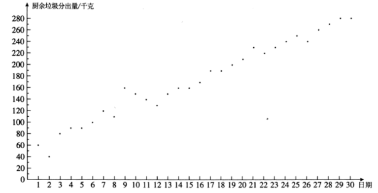
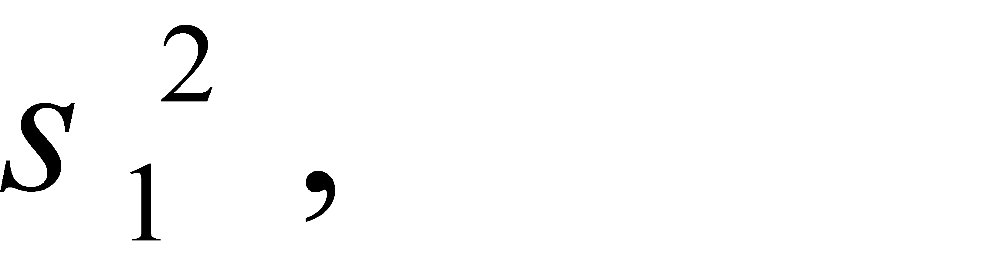
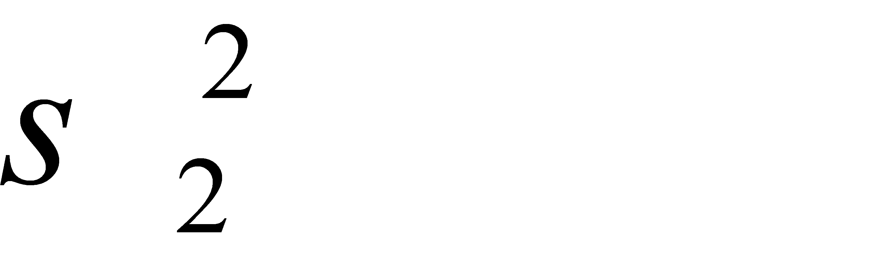
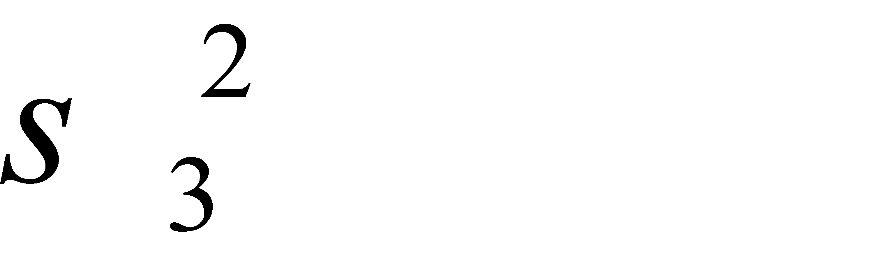
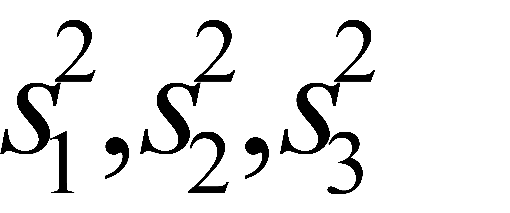
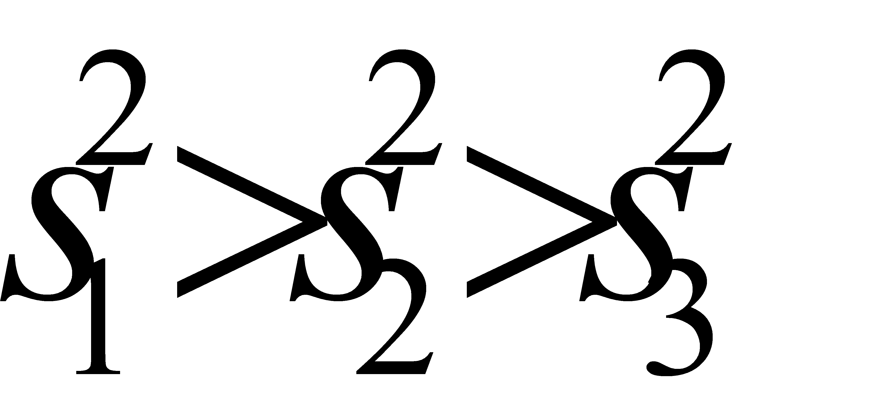
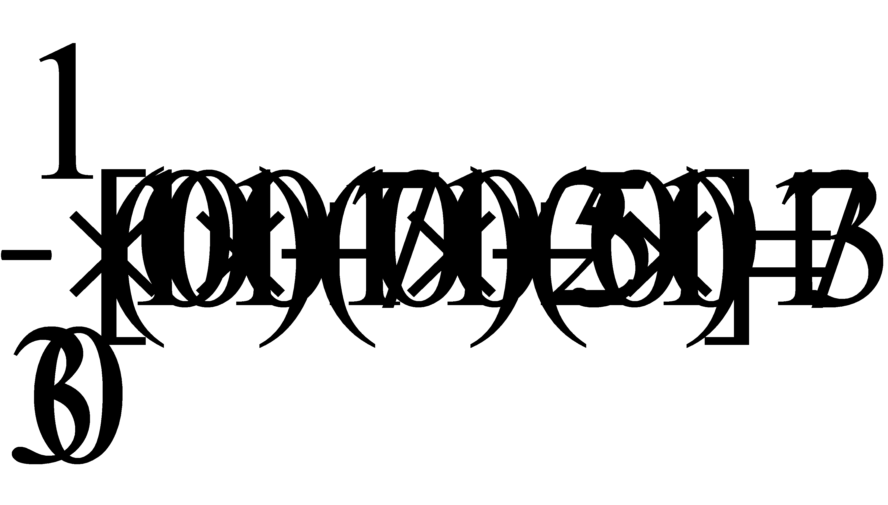
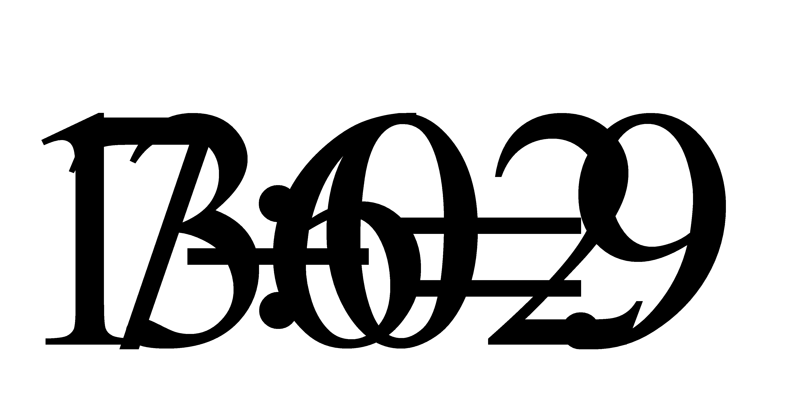

2020年北京市中考数学试题 · 数学解答题 第25题 · 对应解析
25.小云统计了自己所住小区5月1日至30日的厨余垃圾分出量（单位：千克），相关信息如下：
．小云所住小区5月1日至30日的厨余垃圾分出量统计图：

．小云所住小区5月1日至30日分时段的厨余垃圾分出量的平均数如下：
时段 | 1日至10日 | 11日至20日 | 21日至30日 |
平均数 | 100 | 170 | 250 |
（1）该小区5月1日至30日的厨余垃圾分出量的平均数约为 （结果取整数）
（2）已知该小区4月的厨余垃圾分出量的平均数为60，则该小区5月1日至30日的厨余垃圾分出量的平均数约为4月的 倍（结果保留小数点后一位）；
（3）记该小区5月1日至10日的厨余垃圾分出量的方差为

5月11日至20日的厨余垃圾分出量的方差为
，5月21日至30日的厨余垃圾分出量的方差为
．直接写出
的大小关系．【答案】（1）173；（2）2.9倍；（3）

【解析】
【分析】
（1）利用加权平均数的计算公式进行计算，即可得到答案；
（2）利用5月份的平均数除以4月份的平均数，即可得到答案；
（3）直接利用点状图和方差的意义进行分析，即可得到答案．
【详解】解：（1）平均数：

（千克）；故答案为：173；
（2）

倍；故答案为：2.9；
（3）方差反应数据的稳定程度，即从点状图中表现数据的离散程度，
所以从图中可知：；
【点睛】本题考查了方差的意义，平均数，以及数据的分析处理，解题的关键是熟练掌握题意，正确的分析数据的联系．